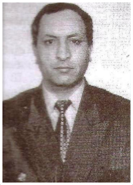

|

Salahov Əzim Sadiq oğlu, 1955-ci ildə Kəlbəcər rayonunun Başlıbel kəndində anadan olmuşdur. O, 1971-ci ildə orta məktəbi bitirib, elə həmin ildə də Azərbaycan Dövlət Universitetinin geofizika fakültəsinə qəbul olmuşdur. 1976-cı ildə universiteti əla qiymətlərlə qurtarıb, “Faydalı qazıntıların geologiyası və kəşfiyyatı” üzrə mühəndis-geoloq ixtisası almışdır. Ə.S.Salahov təyinatla Orenburq vilayətinin Baş geoloji idarəsində böyük texniki-geoloq vəzifəsində işləməyə başlamışdır. Dörd ildən sonra onu işləmək üçün Moskva vilayətinə göndərirlər. Orada böyük mühəndis geoloq vəzifəsində işləmiş, 1981-ci ildə Azərbaycana qayıtmişdır və Azərbaycan Elmlər Akademiyasının Geologiya İnistitutunda aspiranturaya daxil olmuşdur. Ə.S.Salahov 1985-ci ildə aspiranturanı müvəfəqiyyətlə başa vurmuşdur. Aspiranturanı qurtaran il Azərbaycanda geologiyanın əsasını qoyanlardan biri, geologiya-mineralogiya elmləri doktoru, professor Rəşid Nəcəfqulu oğlu Abdullayevin rəhbərliyi ilə “Kürdəmir-Saatlı qravitasiya anomaliyasının maqmatik süxurlarının letrologiyası” mövzusunda dissertasiyasını müdafiə edib, geologiya-mineralogiya elimləri namizədi alimlik dərəcəsinə layiq görülmüşdür. Ə.S.Salahov institututda işləyə-işləyə, uzun müddət geologiya elmlərinin ən aktual problemlərinin və keçmiş SSRİ elm və texnika Komitəsi tərəfindən həyata keçirilən “Yer qabığının dərinlik qatlarının ifrat dərinlik quyuları və geofiziki üsullarla öyrənilməsi” probleminin həlli üzərində çalışmış və bilavasitə Saatlı ifrat dərinlik quyusunun kəsiyini öyrənən əsas tədqiqatçılardan biri olmuşdur. Ə.S.Salahov dəfələrlə keçmiş SSRİ ərazisində Moska, Sank-Peterburq, Novosibirsk, Xabarovsk şəhərlərində keçirilmiş Ümumittifaq və Beynəlxalq elmi konfrans və simpoziumlarda elmi məqalələrlə çıxış etmişdir. Eyni zamanda Əzim müəllim Ankara şəhərində keçirilmiş (1992) Beynəlqalq simpoziumunda geoloji mövzuda məruzə etmişdir. Onun bu simpoziumdakı çıxışı xarixi ölkələrdən gəlmiş iştirakçılar tərəfindən yüksək qiymətləndirilmişdir. Ə.S.Salahov Respublika və Beynəlxalq Konfrans və simpoziumlarda 25 elmi məruzə oxumuş və bu məruzələr müxtəlif elmi jurnallarda çap olunmuşdur. |
||